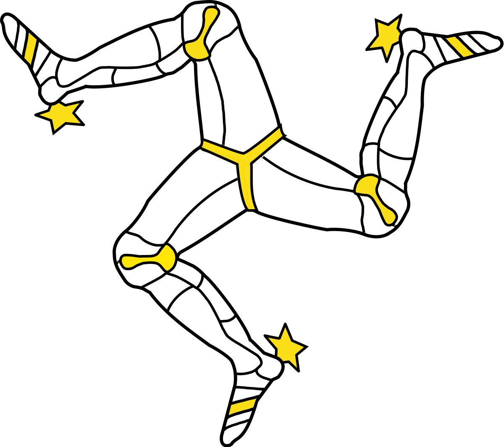

Researcher // Developer // Dog lover

Born in London and brought up in the Isle of Man, I've seen a range of enviroments. It's encouraged me to adapt, but also bring my own skills.
Browse my portfolio to see examples of my work and learn more about me.
Feel free to get in touch!

I have been working in various job roles since I graduated and every one used technology. Technology is now vital in our day to day lives, from phones, laptops to ordering a taxi and food. It's moving so quickly it's almost impossible to guess where we could be next week, next month or next year.
But I know I want to be apart of it.
My interest in coding and technology came from a job role where I had implemented a CRM system for the company to use. I had found that it was difficult to understand the full capabilities of the system with zero front end or back end knowledge.
Another factor which got me interested in coding was the range of uses it has.
The lack of women representation in the industry also interested me, as I realised that it was not the male only industry which I thought it was. I came across exciting female tech developers on social media and it demonstrated the diversity in the industry.

While in the past, the IT department of any business has been small and hidden away - and generally seen as not essential. We are experiencing a significant change in the purpose of IT in modern business. In fact, IT is turning into more than people being asked “have you tried switching it off and on again?” And is now an essential part of any business.
Not just for IT issues. IT now encompasses decision making, marketing and business growth, customer support and satisfaction and resource management and globalisation.
One purpose of IT is that it enables communication. This is especially important for large businesses that have multiple locations and need to share and access information in real time. Another purpose is that businesses can distribute marketing materials online, connect through social media and gather information on consumers.
CRM systems are particularly advantageous for many businesses as these enable businesses to track leads, customers, sales and progress on projects or tasks in one digital location.
For any digital project to be successful, developers need to understand the purpose of what is being created. By understanding this end point, and discussing this with various stakeholders, developers can then plan the stages to reach the appropriate conclusion. This is an essential step to understand as if this is done wrong; restarting the project from scratch or updating the project can prove costly and time wasting.
There are several online resources which can be used to develop a digital project. These include Trello for planning, GitHub for sharing information and code, along with search sites such as Google which can provide further information on any issues which may arise.
Collaborative and communication skills are also key for a successful digital project. To create these projects, developers have to work in teams which can range from front end to developers, back end developers, to designers and researchers. Any correspondence should be stored for future reference, while teams would need to be aware of tasks which are on-going, complete or not started and who is responsible for these tasks. Resources for this would be Slack for communication, CodePen and GitHub for storing code online to share, and Trello for planning and real time tracking of tasks.
I have varied experience in planning and carrying out tasks using IT. The most recent of which was designing this website. The planning stages of this can be seen on my public Trello board.
As you can see from this board, I have separated the creation of the blog into sections (or ‘cards’). By doing this it not only makes the task more manageable but also allows me to track where I am with each section. These are then moved from ‘To Do’ to ‘In Progress’ or ‘Complete’ as these are done.
Another advantage of Trello is that users can make sub tasks within a card in the form of a checklist. This can be used to make sure each task is completed fully.
As with any project, developers need to do a risk assessment when completing a digital project. This allows them to be prepared and set up contingency plans if any issues did arise. Risks which could arise include internal factors such as a file being lost or corrupted; security issues such as hacking and viruses; and external factors such as natural disasters, fire or lack of internet access.
Two factors to consider when selecting software in particular is the cost. There are many free platforms available such as Trello, Slack, Github and Codepen. The advantage of these apps is that there is no cost to the individual, team or business and can be downloaded straight away.
Another thing to consider when selecting software is the usability. The more efficient the platform the less time needs to be wasted working through it or learning the platform.
Once I started projects on the Code Nation course, it was important that we worked out the best technologies for collaborative working.
The main two which we used were Slack and Trello. The benefits of these two were that a Trello bot could be used to link the two pieces of software. While this wasn’t ideal in some circumstances (e.g. the many notifications from Trello meant that any conversations on Slack could be pushed up too far and missed), it did have its benefits. For example, as Project Lead on our iOS app development project, when I was out of the classroom for other appointments, I was able to keep track of any changes which had been made via the Slack app as I wasn’t able to follow the Trello board in real time.
Not only did Slack allow me to keep track of activities on Trello, but also converse with the team. We could also use Slack to send copies of presentations, information and projects.
For writing code I used Visual Studio. This was a free resource which I could use on my Mac laptop in the classroom and my laptop at home. Being able to use on piece of software for JavaScript, HTML and CSS provided a strong resource to use when moving onto other languages.
Legal constraints such as GDPR are important to recognise while creating digital projects.The main concern is that businesses are now unable to collect data on users and customers without their consent. This is done through cookies which are outlined for the user to opt out of. Similarly the business is not able to send out any marketing materials unless the user opts in. Another concern is that if a business is hacked, then they must inform users within a 72 hours of discovery.
A recent legislation which will impact digital projects is Article 13. This strengthens copyright laws in the EU to hold large corporations accountable but developers will need to be vigilant.
Yes I am happy with the tools I used. They were easy to learn and practical for what I needed. The main benefits were that I could plan the website by making cards and tracking progress. Visual Studio was easy to use and I could download it on my home laptop to practice.
Yes, I used Visual Studio and Trello. These enabled me to organise my work and plan. For example, on Trello you can create cards for individual tasks. Within these cards I could further divide tasks by using the check lists if needed. Then, as I was working, I could move cards between columns to show where I was with them (e.g. In progress, not started or complete.
Similarly, with Visual Studio I could use one piece of software for both HTML and CSS. This meant I could easily switch between tabs to check my work.
The colour scheme is minimalist which was the style that I wanted. However, it could come across as quite basic for some users. One strength of the website is that it should be easy to read if someone was visually impaired as the sections are clearly defined and headers are noticable.
Going forward I would like to add more pages. This would allow me to add more information but also section it off, as currently there is a lot of content on one page which can seem tedious. I would also like to add personal photos. This would avoid the copyright regulations but also as the website was to be personal to me I could make the photos more relevent to the page.
Yes, the website matches the requirements and fit for purpose.
The benefits of using Trello was that it could be accessed from the classroom and home. As it's cloud based it also updated in real time. While Visual Studio was not online, I could download the software at home which meant I could continue practicing coding after the lesson.
Being more efficent with Trello would have improved productivity in this task. For example, I could have typed my content on a document and then attached that to Trello rather than typing direct onto Trello. This would have made formatting easier and would have been easier to visualise. I could have also taken advantage of Trello's checklists within each card which could have further broken down each task.
Similarly I would have done more indepth research of other similar websites to get ideas and then plan out the website beforehand. This way I could research what I wanted to do, what I wanted it to look like, and also research how to achieve certain things as I spent a lot of time struggling to fix things as I was creating the page.
Working in a team would have made this project more efficent. By working in a team we could have delegated tasks based on personal skills, such as creativity, coding etc.
Testing digital solutions would be running through them myself, my team (if there was one) and also conducting user testing. I would want to do this on various browsers and devices to make sure that the page was responsive.
I kept my page minimal by keeping the background white. The reason I did this was because I liked the style, and it avoids the page feeling too cluttered or being distracted by too many patterns or colours. To define each section I also used a dashed border in different colours which added a bit of variety to the page. And similarly, I also used small images to further break up the sections. Another purpose of the images was to add a bit of personality to the page and avoid it looking too plain.
Copyright is a significant constraint on developing websites, especially with the implimentation of Article 13 in the EU. As a result, companies are required to add appropriate copyright information on websites for the content which is used
GDPR also impacts websites, as businesses are required to ask permission for any data which they may store. This is done through cookies or opt in options which signing up.
Fishing is also a concern where a fake copy of a legimate website is used to fish for data such as customers details.
There are several accessibility issues which need to be taken into account when creating a website. These include using specific colours to account for users who may be visually impaired or colour blind. Similarly, websites can include translate options for users speaking different languages.
HTML and CSS are read by multiple browsers which makes these the most appriotiate filetypes for creating websites.